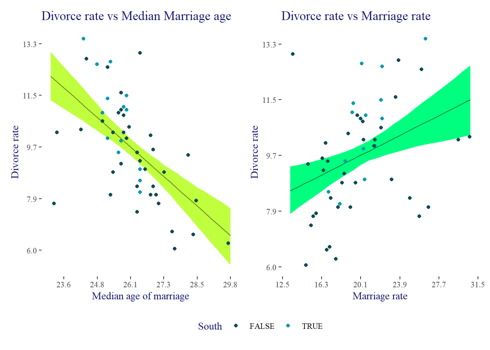
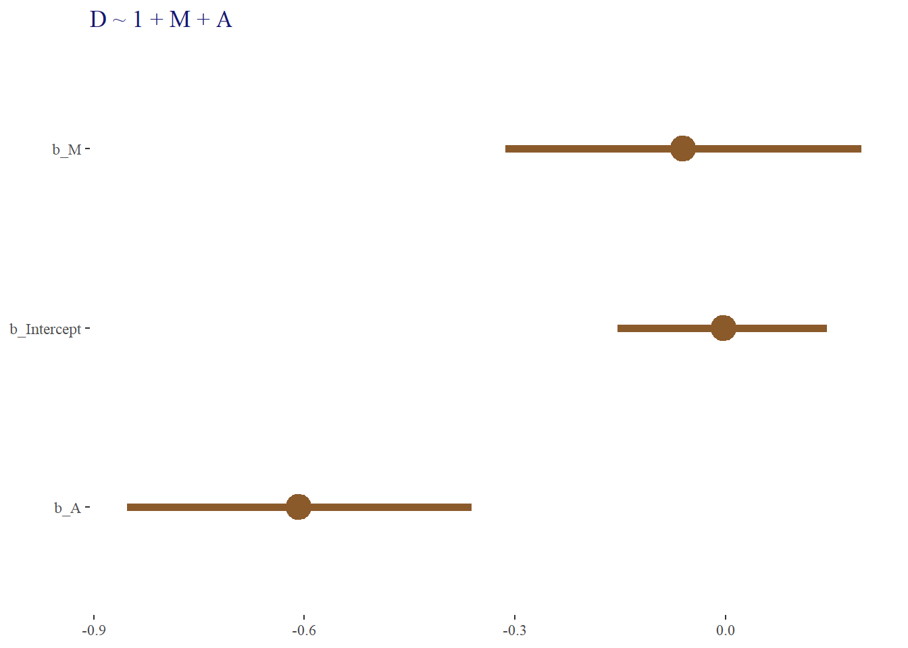
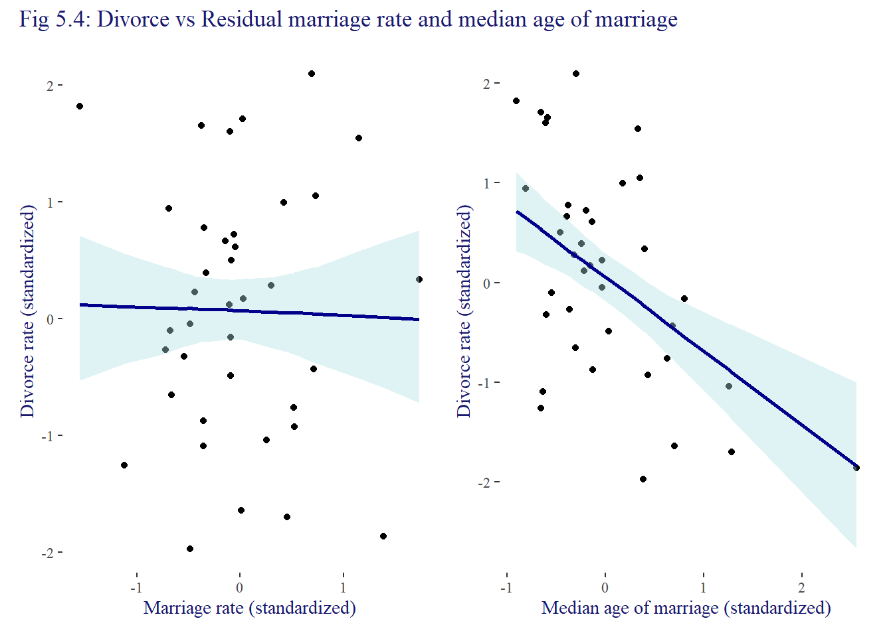
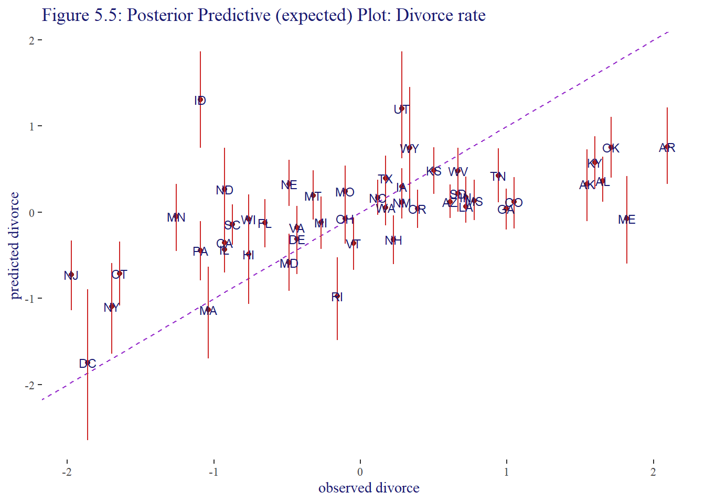
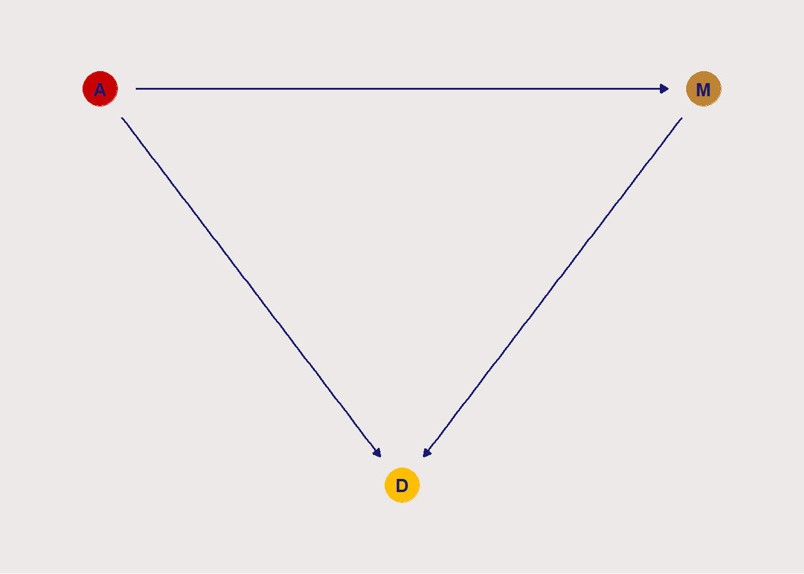
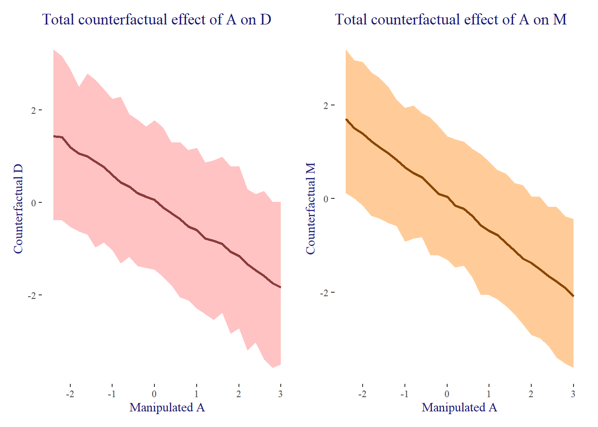
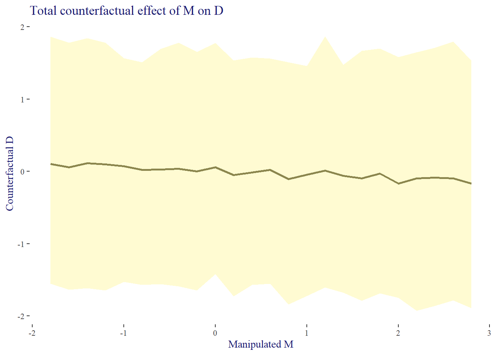
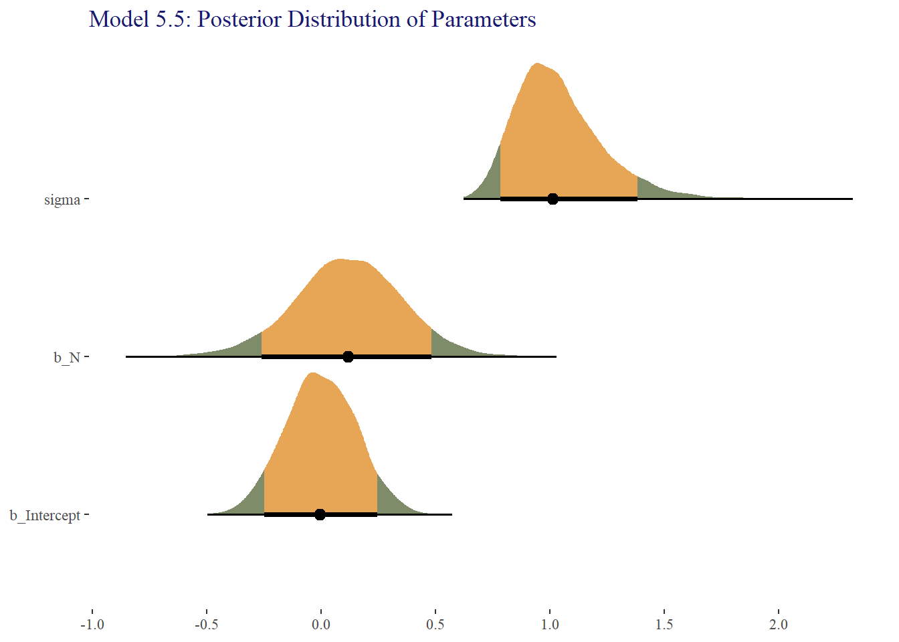
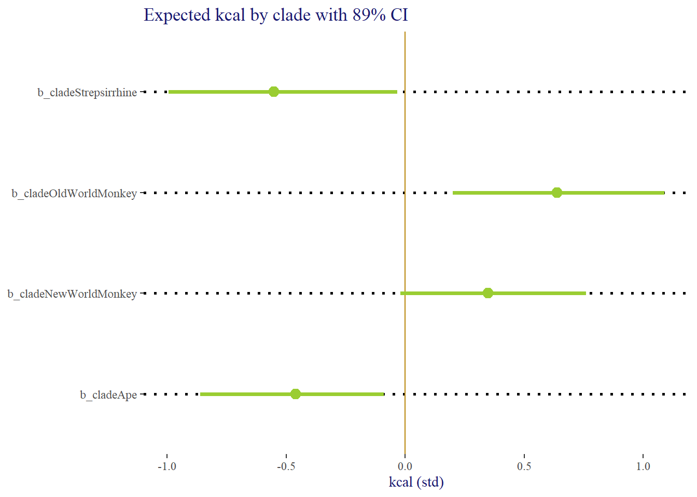

# For execution on a local, multicore CPU with excess RAM
options(mc.cores = parallel::detectCores())
# To avoid recompilation of unchanged Stan programs
rstan_options(auto_write = TRUE)5 Multivariate Linear Models
Some options to facilitate the computations
The default theme used by ggplot2
# The default theme used by ggplot2
ggplot2::theme_set(ggthemes::theme_tufte(base_size = 11, base_family = "serif", ticks = TRUE))
ggplot2::theme_update(title = element_text(color = "midnightblue"))Some custom functions used in this following code
# Convert widths to probabilities. Useful when plotting.
width2probs <- function(x, add = NULL) {
stopifnot(is.finite(x),x >= 0.5, x <= 1)
probs <- (1 - x) / 2
probs <- c(probs, 1 - probs)
if (!is.null(add)) probs <- c(probs, add)
sort(unique(probs))
}
# test the function
stopifnot(all.equal(width2probs(c(0.89, 1), add = 0.5), c(0, 0.055, 0.5, 0.945, 1)))As mentioned in the summary of chapter 4, from hereon, the brms package will be used instead of rethinking. In addition, we might change the exponential(1) prior for the cauchy(0, 1) when it improves the performance of the fit.
5.1 Spurious association
Get the data and standardize the variables
data("WaffleDivorce")
dataWaffle <- WaffleDivorce |>
# standardize the variables
mutate(A = scale(as.vector(MedianAgeMarriage)),
M = scale(as.vector(Marriage)),
D = scale(as.vector(Divorce)))
dataWaffle |>
select(MedianAgeMarriage, Marriage, Divorce, A, M, D, South) |>
skim() |>
mutate(across(.cols = where(is.numeric), .fns = round, digits = 1))Warning: There was 1 warning in `mutate()`.
ℹ In argument: `across(.cols = where(is.numeric), .fns = round, digits = 1)`.
Caused by warning:
! The `...` argument of `across()` is deprecated as of dplyr 1.1.0.
Supply arguments directly to `.fns` through an anonymous function instead.
# Previously
across(a:b, mean, na.rm = TRUE)
# Now
across(a:b, \(x) mean(x, na.rm = TRUE))| Name | select(…) |
| Number of rows | 50 |
| Number of columns | 7 |
| _______________________ | |
| Column type frequency: | |
| numeric | 7 |
| ________________________ | |
| Group variables | None |
Variable type: numeric
| skim_variable | n_missing | complete_rate | mean | sd | p0 | p25 | p50 | p75 | p100 | hist |
|---|---|---|---|---|---|---|---|---|---|---|
| MedianAgeMarriage | 0 | 1 | 26.1 | 1.2 | 23.2 | 25.3 | 25.9 | 26.8 | 29.7 | ▂▇▇▂▁ |
| Marriage | 0 | 1 | 20.1 | 3.8 | 13.5 | 17.1 | 19.7 | 22.1 | 30.7 | ▅▇▆▂▁ |
| Divorce | 0 | 1 | 9.7 | 1.8 | 6.1 | 8.3 | 9.8 | 10.9 | 13.5 | ▂▇▇▅▃ |
| A | 0 | 1 | 0.0 | 1.0 | -2.3 | -0.6 | -0.1 | 0.6 | 2.9 | ▂▆▇▂▁ |
| M | 0 | 1 | 0.0 | 1.0 | -1.7 | -0.8 | -0.1 | 0.5 | 2.8 | ▅▇▆▂▁ |
| D | 0 | 1 | 0.0 | 1.0 | -2.0 | -0.8 | 0.0 | 0.7 | 2.1 | ▂▇▇▅▃ |
| South | 0 | 1 | 0.3 | 0.5 | 0.0 | 0.0 | 0.0 | 1.0 | 1.0 | ▇▁▁▁▃ |
and plot the data
plot_waffles <- function(data, x_var = "WaffleHouses", y_var = "Divorce",
color_var = "South",
titles = list(title = "Waffle Houses",
x = "Waffle Houses per million",
y = "Divorce rate",
color = "South")) {
ggplot(data, aes(x = .data[[x_var]], y = .data[[y_var]])) +
geom_point(aes(color = as.logical(.data[[color_var]]))) +
scale_color_paletteer_d("fishualize::Bodianus_rufus", direction = -1) +
labs(title = titles$title, x = titles$x, y = titles$y, color = titles$color)
}plotWaffle <- lapply(X = c("MedianAgeMarriage", "Marriage", "WaffleHouses"),
FUN = function(x) {
plot_waffles(dataWaffle, x_var = x) +
stat_smooth(method = "lm", fullrange = TRUE,
fill = "darkolivegreen", color = "darkgreen") +
labs(x = x)
})
wrap_plots(plotWaffle, guides = "collect") &
theme(legend.position = "bottom")`geom_smooth()` using formula = 'y ~ x'
`geom_smooth()` using formula = 'y ~ x'
`geom_smooth()` using formula = 'y ~ x'GGally::ggscatmat(dataWaffle, columns = c("A", "M", "D"))Registered S3 method overwritten by 'GGally':
method from
+.gg ggplot2Warning: The dot-dot notation (`..scaled..`) was deprecated in ggplot2 3.4.0.
ℹ Please use `after_stat(scaled)` instead.
ℹ The deprecated feature was likely used in the GGally package.
Please report the issue at <https://github.com/ggobi/ggally/issues>.The model for regressing the divorce rate \(D\) on the median age \(A\) is
\[ \begin{align*} D_i &\sim \mathcal{N}(\mu_i, \sigma) \\ \mu_i &= \alpha + \beta_A \cdot A_i \\ \alpha &\sim \mathcal{N}(0, 0.2) \\ \beta_A &\sim \mathcal{N}(0, 0.5) \\ \sigma &\sim \mathcal{Exp}(1) \end{align*} \]
and the fit, take note of the argument sample_prior = TRUE which is important for the rest of the exercise
tictoc::tic(msg = sprintf("run time of %s, use the cache.", "70 secs."))
fit05_01 <- xfun::cache_rds({
out <- brm(
data = dataWaffle,
formula = D ~ 1 + A,
family = gaussian,
prior = c(
prior(normal(0, 0.2), class = Intercept),
prior(normal(0, 0.5), class = b),
prior(exponential(1), class = sigma)),
iter = 2000, warmup = 1000, chains = 4,
sample_prior = TRUE,
core = detectCores(), seed = 5)
out <- brms::add_criterion(out, criterion = c("waic", "loo"))
},
file = "ch05_fit05_01")
tictoc::toc()run time of 70 secs., use the cache.: 0.13 sec elapsedand we can investigate the priors as follows
prior05_01 <- brms::prior_draws(fit05_01)get the fitted \(\mu_i\) by using a sequence of median age marriage of length 30 from the min(MedianAgeMarriage) to max(MedianAgeMarriage).
lpred05_01 <- data.frame(
A = seq_range(dataWaffle$A, n = 30, pretty = TRUE)) |>
add_linpred_draws(fit05_01, ndraws = 500) |>
mean_qi(.width = 0.89)and plot them
plot05_01 <- list()
plot05_01 <- within(plot05_01, {
age <- ggplot(data = dataWaffle, mapping = aes(x = A, y = D)) +
geom_smooth(data = lpred05_01,
aes(y = .linpred, ymin = .lower, ymax = .upper),
stat = "identity",
fill = "olivedrab1", color = "olivedrab4", alpha = 1, size = 1/2) +
geom_point(aes(color = as.logical(South))) +
scale_x_continuous(breaks = scales::breaks_extended(n = 7),
labels = function(x) {
center <- mean(dataWaffle$MedianAgeMarriage)
scale <- sd(dataWaffle$MedianAgeMarriage)
scales::label_number(accuracy = 0.1)(x * scale + center)
}) +
scale_y_continuous(breaks = scales::breaks_extended(n = 7),
labels = function(x) {
center <- mean(dataWaffle$Divorce)
scale <- sd(dataWaffle$Divorce)
scales::label_number(accuracy = 0.1)(x * scale + center)
}) +
scale_color_paletteer_d("calecopal::kelp1", direction = -1) +
theme(legend.position = c(0.85, 0.85),
title = element_text(color = "midnightblue")) +
labs(title = "Divorce rate vs Median Marriage age",
color = "South",
x = "Median age of marriage", y = "Divorce rate")
})Warning: Using `size` aesthetic for lines was deprecated in ggplot2 3.4.0.
ℹ Please use `linewidth` instead.# plot05_01The model for regressing the divorce rate \(D\) on the marriage rate \(M\) is
\[ \begin{align*} D_i &\sim \mathcal{N}(\mu_i, \sigma) \\ \mu_i &= \alpha + \beta_M \cdot M_i \\ \alpha &\sim \mathcal{N}(0, 0.2) \\ \beta_A &\sim \mathcal{N}(0, 0.5) \\ \sigma &\sim \mathcal{Exp}(1) \end{align*} \]
tictoc::tic(msg = sprintf("run time of %s, use the cache.", "80 secs."))
fit05_02 <- xfun::cache_rds({
out <- brm(
data = dataWaffle,
formula = D ~ 1 + M,
family = gaussian,
prior = c(
prior(normal(0, 0.2), class = Intercept),
prior(normal(0, 0.5), class = b),
prior(exponential(1), class = sigma)),
iter = 2000, warmup = 1000, chains = 4,
sample_prior = TRUE,
core = detectCores(), seed = 5)
out <- brms::add_criterion(out, criterion = c("waic", "loo"))
},
file = "ch05_fit05_02")
tictoc::toc()run time of 80 secs., use the cache.: 0.14 sec elapsedposterior_summary(fit05_02) Estimate Est.Error Q2.5 Q97.5
b_Intercept 1.418806e-03 0.11272147 -0.22161720 0.2202850
b_M 3.504744e-01 0.13212237 0.07844829 0.6042600
sigma 9.479699e-01 0.09600916 0.77926104 1.1520339
prior_Intercept 8.586518e-04 0.20068513 -0.38689646 0.3962355
prior_b 1.248018e-02 0.50641854 -0.95523318 1.0106563
prior_sigma 9.985915e-01 1.00077523 0.02319797 3.7120347
lprior -9.226424e-01 0.31150694 -1.67568849 -0.4986527
lp__ -6.901415e+01 1.24450230 -72.22582345 -67.5839137lpred05_02 <- list()
lpred05_02 <- data.frame(
M = seq_range(dataWaffle$M, n = 30, pretty = TRUE)) |>
add_linpred_draws(fit05_02, ndraws = 500) |>
mean_qi(.width = 0.89)and plot them
plot05_02 <- list()
plot05_02 <- within(plot05_02, {
marriage <- ggplot(data = dataWaffle, mapping = aes(x = M, y = D)) +
geom_smooth(data = lpred05_02,
aes(y = .linpred, ymin = .lower, ymax = .upper),
stat = "identity",
fill = "springgreen1", color = "springgreen4", alpha = 1, size = 1/2) +
geom_point(aes(color = as.logical(South))) +
scale_x_continuous(breaks = scales::breaks_extended(n = 7),
labels = function(x) {
center <- mean(dataWaffle$Marriage)
scale <- sd(dataWaffle$Marriage)
scales::label_number(accuracy = 0.1)(x * scale + center)
}) +
scale_y_continuous(breaks = scales::breaks_extended(n = 7),
labels = function(x) {
center <- mean(dataWaffle$Divorce)
scale <- sd(dataWaffle$Divorce)
scales::label_number(accuracy = 0.1)(x * scale + center)
}) +
scale_color_paletteer_d("calecopal::kelp1", direction = -1) +
theme(legend.position = c(0.85, 0.85),
title = element_text(color = "midnightblue")) +
labs(title = "Divorce rate vs Marriage rate",
color = "South",
x = "Marriage rate", y = "Divorce rate")
})
# plot05_02$marriageplot05_01$age + plot05_02$marriage +
plot_layout(guides = "collect") &
theme(legend.position = "bottom")
5.1.1 Think before you regress
dagWaffle <- list()
dagWaffle <- within(dagWaffle, {
coord <- data.frame(
name = c("A", "D", "M"),
x = c(1, 2, 3),
y = c(2, 1, 2))
dag1 <- ggdag::dagify(M ~ A,
D ~ A + M,
coords = coord)
plot1 <- ggplot(dag1, aes(x = x, y = y, xend = xend, yend = yend)) +
geom_dag_point(aes(color = name), size = 10) +
geom_dag_text(color = "midnightblue") +
geom_dag_edges(edge_color = "midnightblue") +
scale_color_paletteer_d("calecopal::kelp1") +
scale_x_continuous(NULL, breaks = NULL, expand = c(0.1, 0.1)) +
scale_y_continuous(NULL, breaks = NULL, expand = c(0.1, 0.1)) +
ggthemes::theme_solid(fill = "snow2") +
theme(legend.position = "none")
dag2 <- ggdag::dagify(M ~ A,
D ~ A,
coords = coord)
plot2 <- ggplot(dag2, aes(x = x, y = y, xend = xend, yend = yend)) +
geom_dag_point(aes(color = name), size = 10) +
geom_dag_text(color = "midnightblue") +
geom_dag_edges(edge_color = "midnightblue") +
scale_color_paletteer_d("calecopal::kelp1") +
scale_x_continuous(NULL, breaks = NULL, expand = c(0.1, 0.1)) +
scale_y_continuous(NULL, breaks = NULL, expand = c(0.1, 0.1)) +
ggthemes::theme_solid(fill = "snow2") +
theme(legend.position = "none")})with(dagWaffle, {plot1 | plot2}) +
plot_annotation(
title = "Testable Implications of the Waffle Data"
)5.1.2 Testable implications
dag <- "dag{ D <- A -> M }"
dagitty::dagitty(dag) |>
dagitty::impliedConditionalIndependencies()D _||_ M | Adag <- "dag{ D <- A -> M -> D }"
dagitty::dagitty(dag) |>
dagitty::impliedConditionalIndependencies()
message("This returns NULL because there are no conditional independencies")This returns NULL because there are no conditional independencies5.1.3 Multiple regression notation
The model with median age and marriage rate, both standardized.
The \(+\) in the model can be interpreted as the divorce rate is a function of the marriage rate OR the median age of marriage
\[ \begin{align*} D_i &\sim \mathcal{N}(\mu_i, \sigma) \\ \mu_i &= \alpha + \beta_M \cdot M_i + \beta_A \cdot A_i \\ \alpha &\sim \mathcal{N}(0, 0.2) \\ \beta_1 &\sim \mathcal{N}(0, 0.5) \\ \beta_2 &\sim \mathcal{N}(0, 0.5) \\ \sigma &\sim \mathcal{Exp}(0, 1) \end{align*} \]
5.1.4 Approximating the posterior
tictoc::tic(msg = sprintf("run time of %s, use the cache.", "80 secs."))
fit05_03 <- xfun::cache_rds({
out <- brm(
data = dataWaffle,
formula = D ~ 1 + M + A,
family = gaussian,
prior = c(
prior(normal(0, 0.2), class = Intercept),
prior(normal(0, 0.5), class = b, coef = "M"),
prior(normal(0, 0.5), class = b, coef = "A"),
prior(exponential(1), class = sigma)),
iter = 2000, warmup = 1000, chains = 4,
core = detectCores(), seed = 5)
out <- brms::add_criterion(out, criterion = c("waic", "loo"))
},
file = "ch05_fit05_03")
tictoc::toc()run time of 80 secs., use the cache.: 0.18 sec elapsedposterior_summary(fit05_03) Estimate Est.Error Q2.5 Q97.5
b_Intercept -0.002879751 0.10047152 -0.2003863 0.1896808
b_M -0.061176350 0.16111769 -0.3720397 0.2543411
b_A -0.606779058 0.16149095 -0.9255685 -0.2939154
sigma 0.827157443 0.08754153 0.6811746 1.0243357
lprior -1.562391660 0.48423505 -2.6847351 -0.8670715
lp__ -62.895506465 1.48908896 -66.7400580 -61.0721726tidybayes::get_variables(fit05_03) [1] "b_Intercept" "b_M" "b_A" "sigma"
[5] "lprior" "lp__" "accept_stat__" "stepsize__"
[9] "treedepth__" "n_leapfrog__" "divergent__" "energy__" fit05_03 |>
gather_draws(b_Intercept, b_M, b_A, ndraws = 500) |>
ggplot(aes(x = .value, y = .variable)) +
stat_pointinterval(point_interval = mean_qi,
.width = 0.89,
fatten_point = 3,
size = 10,
color = "tan4") +
labs(title = deparse1(fit05_03$formula$formula),
x = NULL, y = NULL)
5.1.5 Plotting multivariate posteriors
3 main plots are used
- Predictor residual plots
- Posterior prediction plots
- Counterfactual plots
5.1.5.1 Predictor residual plots
5.1.5.1.1 Marriage rate residuals
We compute marriage rate in terms of median age of marriage which is the model
\[ \begin{align*} M_i &\sim \mathcal{N}(\mu_i, \sigma) \\ \mu_i &= \alpha + \beta \cdot A_i \\ \alpha &\sim \mathcal{N}(0, 0.2) \\ \beta &\sim \mathcal{N}(0, 0.5) \\ \sigma &\sim \mathcal{Exp}(1) \end{align*} \]
fit this model
tictoc::tic(msg = sprintf("run time of %s, use the cache.", "70 secs."))
fit05_04m <- xfun::cache_rds({brm(
data = dataWaffle,
formula = M ~ 1 + A,
family = gaussian,
prior = c(
prior(normal(0, 0.2), class = Intercept),
prior(normal(0, 0.5), class = b),
prior(exponential(1), class = sigma)),
iter = 2000, warmup = 100, chains = 4, core = detectCores(),
seed = 5)
},
file = "ch05_fit05_04m")
tictoc::toc()run time of 70 secs., use the cache.: 0.18 sec elapsedsummary(fit05_04m) Family: gaussian
Links: mu = identity; sigma = identity
Formula: M ~ 1 + A
Data: dataWaffle (Number of observations: 50)
Draws: 4 chains, each with iter = 2000; warmup = 100; thin = 1;
total post-warmup draws = 7600
Population-Level Effects:
Estimate Est.Error l-95% CI u-95% CI Rhat Bulk_ESS Tail_ESS
Intercept -0.00 0.09 -0.18 0.18 1.00 9909 5930
A -0.69 0.10 -0.89 -0.50 1.00 7018 5473
Family Specific Parameters:
Estimate Est.Error l-95% CI u-95% CI Rhat Bulk_ESS Tail_ESS
sigma 0.71 0.07 0.58 0.87 1.00 6719 5532
Draws were sampled using sampling(NUTS). For each parameter, Bulk_ESS
and Tail_ESS are effective sample size measures, and Rhat is the potential
scale reduction factor on split chains (at convergence, Rhat = 1).lpred05_04m <- dataWaffle |>
select(Loc, M, A) |>
add_linpred_draws(fit05_04m, ndraws = 500) |>
mean_qi()
plot05_04 <- list()
plot05_04 <- within(plot05_04, {
marriage <- lpred05_04m |>
ggplot(aes(x = A, y = M)) +
geom_point() +
geom_segment(aes(xend = A, yend = .linpred), size = 0.5, color = "green") +
geom_line(aes(x = A, y = .linpred), color = "purple") +
geom_text(aes(label = Loc), size = 3, color = "darkblue") +
labs(x = "Median age of marriage (standardized)",
y = "Marriage rate (standardized)")
})5.1.5.1.2 Age of Marriage residuals
We compute age of marriage in terms of rate of marriage which is the model
\[ \begin{align*} A_i &\sim \mathcal{N}(\mu_i, \sigma) \\ \mu_i &= \alpha + \beta \cdot M_i \\ \alpha &\sim \mathcal{N}(0, 0.2) \\ \beta &\sim \mathcal{N}(0, 0.5) \\ \sigma &\sim \mathcal{Exp}(1) \end{align*} \]
fit this model
tictoc::tic(msg = sprintf("run time of %s, use the cache.", "70 secs."))
fit05_04a <- xfun::cache_rds({brm(
data = dataWaffle,
formula = A ~ 1 + M,
family = gaussian,
prior = c(
prior(normal(0, 0.2), class = Intercept),
prior(normal(0, 0.5), class = b),
prior(exponential(1), class = sigma)),
iter = 2000, warmup = 100, chains = 4, core = detectCores(),
seed = 5)
},
file = "ch05_fit05_04a")
tictoc::toc()run time of 70 secs., use the cache.: 0.19 sec elapsedlpred05_04a <- dataWaffle |>
select(Loc, M, A) |>
add_linpred_draws(fit05_04a, ndraws = 500) |>
mean_qi()
plot05_04 <- within(plot05_04, {
age <- lpred05_04a |>
ggplot(aes(x = M, y = A)) +
geom_point() +
geom_segment(aes(xend = M, yend = .linpred), size = 0.5, color = "orchid") +
geom_line(aes(x = M, y = .linpred), color = "darkgoldenrod") +
geom_text(aes(label = Loc), size = 3, color = "darkblue") +
labs(x = "Marriage rate (standardized)",
y = "Median age of marriage (standardized)")
})which gives us the 2 top plots of figure 5.4
wrap_plots(plot05_04[c("marriage", "age")])5.1.5.1.3 Using residuals as predictors
Now we use the residuals of the marriage rate to represent marriage free of any influence by the median age of marriage. We use the residual_draws() function to extract the residuals.
res05_04m <- dataWaffle |>
select(Loc, D, M, A) |>
add_residual_draws(fit05_04m, ndraws = 500) |>
ungroup() |>
select(D, .residual) |>
group_by(D) |>
mean_qi() |>
select(D, resM = .residual)tictoc::tic(msg = sprintf("run time of %s, use the cache.", "60 secs."))
fit05_04dm <- xfun::cache_rds({brm(
data = res05_04m,
formula = D ~ 1 + resM,
family = gaussian,
prior = c(
prior(normal(0, 0.5), class = Intercept),
prior(normal(0, 0.5), class = b),
prior(exponential(1), class = sigma)),
iter = 2000, warmup = 100, chains = 4, core = detectCores(),
seed = 5)
},
file = "ch05_fit05_04dm")
tictoc::toc()run time of 60 secs., use the cache.: 0.2 sec elapsedlpred_05_04dm <- res05_04m |>
add_linpred_draws(fit05_04dm, ndraws = 500) |>
median_qi(.width = 0.89) |>
identity()
plot05_04 <- within(plot05_04, {
marriage_res <- lpred_05_04dm |>
ggplot(mapping = aes(x = resM, y = D)) +
geom_point() +
geom_smooth(mapping = aes(y = .linpred, ymin = .lower, ymax = .upper),
stat = "identity", fill = "powderblue", color = "darkblue") +
labs(x = "Marriage rate (standardized)",
y = "Divorce rate (standardized)")
})res05_04a <- dataWaffle |>
select(Loc, D, M, A) |>
add_residual_draws(fit05_04a, ndraws = 500) |>
ungroup() |>
select(D, .residual) |>
group_by(D) |>
mean_qi() |>
select(D, resA = .residual)tictoc::tic(msg = sprintf("run time of %s, use the cache.", "70 secs."))
fit05_04da <- xfun::cache_rds({brm(
data = res05_04a,
formula = D ~ 1 + resA,
family = gaussian,
prior = c(
prior(normal(0, 0.5), class = Intercept),
prior(normal(0, 0.5), class = b),
prior(exponential(1), class = sigma)),
iter = 2000, warmup = 100, chains = 4, core = detectCores(),
seed = 5)
},
file = "ch05_fit05_04da")
tictoc::toc()run time of 70 secs., use the cache.: 0.53 sec elapsedlpred_05_04da <- res05_04a |>
add_linpred_draws(fit05_04da, ndraws = 500) |>
median_qi(.width = 0.89) |>
identity()
plot05_04 <- within(plot05_04, {
age_res <- lpred_05_04da |>
ggplot(mapping = aes(x = resA, y = D)) +
geom_point() +
geom_smooth(mapping = aes(y = .linpred, ymin = .lower, ymax = .upper),
stat = "identity", fill = "powderblue", color = "darkblue") +
labs(x = "Median age of marriage (standardized)",
y = "Divorce rate (standardized)")
})which gives the bottom part of figure 5.1
wrap_plots(plot05_04[c("marriage_res", "age_res")]) +
plot_annotation("Fig 5.4: Divorce vs Residual marriage rate and median age of marriage")
We conclude that the marriage rate seems to have little impact on the divorce rate once we remove the effect of the median age of marriage.
5.1.5.2 Posterior prediction plots
The textbook mentions posterior predictions. So we use add_epred_draws() to get the expected predictions.
epred05_03 <- dataWaffle |>
add_epred_draws(fit05_03, ndraws = 500) |>
mean_qi()
epred05_03# A tibble: 50 × 23
Location Loc Population MedianAgeMarriage Marriage Marriage.SE Divorce
<fct> <fct> <dbl> <dbl> <dbl> <dbl> <dbl>
1 Alabama AL 4.78 25.3 20.2 1.27 12.7
2 Alaska AK 0.71 25.2 26 2.93 12.5
3 Arizona AZ 6.33 25.8 20.3 0.98 10.8
4 Arkansas AR 2.92 24.3 26.4 1.7 13.5
5 California CA 37.2 26.8 19.1 0.39 8
6 Colorado CO 5.03 25.7 23.5 1.24 11.6
7 Connecticut CT 3.57 27.6 17.1 1.06 6.7
8 Delaware DE 0.9 26.6 23.1 2.89 8.9
9 District of … DC 0.6 29.7 17.7 2.53 6.3
10 Florida FL 18.8 26.4 17 0.58 8.5
# ℹ 40 more rows
# ℹ 16 more variables: Divorce.SE <dbl>, WaffleHouses <int>, South <int>,
# Slaves1860 <int>, Population1860 <int>, PropSlaves1860 <dbl>, A <dbl[,1]>,
# M <dbl[,1]>, D <dbl[,1]>, .row <int>, .epred <dbl>, .lower <dbl>,
# .upper <dbl>, .width <dbl>, .point <chr>, .interval <chr>ggplot(data = epred05_03, aes(x = D, y = .epred)) +
geom_abline(slope = 1, linetype = "dashed", color = "darkorchid") +
geom_point(color = "firebrick4") +
geom_linerange(aes(ymin = .lower, ymax = .upper), color = "firebrick3") +
geom_text(aes(label = Loc), size = 3, color = "midnightblue") +
labs(title = "Figure 5.5: Posterior Predictive (expected) Plot: Divorce rate",
x = "observed divorce",
y = "predicted divorce")
5.1.5.3 Counterfactual plots
We are using the same DAG as above
dagWaffle$plot1
IMPORTANT: The full model implies 2 effects, \(A\) on \(M\) and \(D\) and \(A\) on \(M\). In other words 2 structural equations are involved or expressed differently, 2 formulas in brms.
d_model <- brms::bf(D ~ 1 + A + M)
m_model <- brms::bf(M ~ 1 + A)The set_rescor(FALSE) indicates that we do not want brms to add the residual correlation between \(D\) and \(M\).
Also the argument resp is used to identify the response.
tictoc::tic(msg = sprintf("run time of %s, use the cache.", "60 secs."))
fit05_03_A <- xfun::cache_rds({brm(
data = dataWaffle,
family = gaussian,
d_model + m_model + set_rescor(FALSE),
prior = c(prior(normal(0, 0.2), class = Intercept, resp = D),
prior(normal(0, 0.5), class = b, resp = D),
prior(exponential(1), class = sigma, resp = D),
prior(normal(0, 0.2), class = Intercept, resp = M),
prior(normal(0, 0.5), class = b, resp = M),
prior(exponential(1), class = sigma, resp = M)),
iter = 2000, warmup = 1000, chains = 4, cores = detectCores(),
seed = 5)
}, file = "ch05_fit05_03_A")
tictoc::toc()run time of 60 secs., use the cache.: 0.26 sec elapsedsummary(fit05_03_A) Family: MV(gaussian, gaussian)
Links: mu = identity; sigma = identity
mu = identity; sigma = identity
Formula: D ~ 1 + A + M
M ~ 1 + A
Data: dataWaffle (Number of observations: 50)
Draws: 4 chains, each with iter = 2000; warmup = 1000; thin = 1;
total post-warmup draws = 4000
Population-Level Effects:
Estimate Est.Error l-95% CI u-95% CI Rhat Bulk_ESS Tail_ESS
D_Intercept -0.00 0.10 -0.20 0.20 1.00 5757 3111
M_Intercept 0.00 0.09 -0.17 0.17 1.00 5386 2960
D_A -0.60 0.16 -0.91 -0.29 1.00 3381 2726
D_M -0.06 0.16 -0.36 0.26 1.00 3535 2749
M_A -0.69 0.10 -0.88 -0.49 1.00 5972 2664
Family Specific Parameters:
Estimate Est.Error l-95% CI u-95% CI Rhat Bulk_ESS Tail_ESS
sigma_D 0.83 0.09 0.68 1.02 1.00 5459 3301
sigma_M 0.71 0.07 0.58 0.88 1.00 5342 2919
Draws were sampled using sampling(NUTS). For each parameter, Bulk_ESS
and Tail_ESS are effective sample size measures, and Rhat is the potential
scale reduction factor on split chains (at convergence, Rhat = 1).We manipulate \(M\) \(M=0\) and predicting \(D\) with \(A\) with this new counterfactual \(M\).
pred05_03_A <- list()
pred05_03_A$doA <- data.frame(
A = seq_range(dataWaffle$A, n = 30, pretty = TRUE),
M = 0) |>
add_predicted_draws(fit05_03_A, ndraws = 500) |>
mean_qi()glimpse(pred05_03_A$doA)Rows: 56
Columns: 10
$ A <dbl> -2.4, -2.4, -2.2, -2.2, -2.0, -2.0, -1.8, -1.8, -1.6, -1.6…
$ M <dbl> 0, 0, 0, 0, 0, 0, 0, 0, 0, 0, 0, 0, 0, 0, 0, 0, 0, 0, 0, 0…
$ .row <int> 1, 1, 2, 2, 3, 3, 4, 4, 5, 5, 6, 6, 7, 7, 8, 8, 9, 9, 10, …
$ .category <fct> D, M, D, M, D, M, D, M, D, M, D, M, D, M, D, M, D, M, D, M…
$ .prediction <dbl> 1.42215622, 1.66821397, 1.30870371, 1.56937679, 1.15596064…
$ .lower <dbl> -0.28221979, 0.29648471, -0.55134669, 0.08309260, -0.61338…
$ .upper <dbl> 3.105772, 3.088922, 2.998954, 2.949088, 2.700851, 2.810644…
$ .width <dbl> 0.95, 0.95, 0.95, 0.95, 0.95, 0.95, 0.95, 0.95, 0.95, 0.95…
$ .point <chr> "mean", "mean", "mean", "mean", "mean", "mean", "mean", "m…
$ .interval <chr> "qi", "qi", "qi", "qi", "qi", "qi", "qi", "qi", "qi", "qi"…plot05_03_A <- list()
plot05_03_A$doAonD <- pred05_03_A$doA |>
filter(.category == "D") |>
ggplot(aes(x = A, y = .prediction)) +
geom_smooth(aes(ymin = .lower, ymax = .upper), stat = "identity",
color = "indianred4", fill = "indianred1") +
labs(title = "Total counterfactual effect of A on D",
x = "Manipulated A", y = "Counterfactual D")
# plot05_03_A$doAonDplot05_03_A$doAonM <- pred05_03_A$doA |>
filter(.category == "M") |>
ggplot(aes(x = A, y = .prediction)) +
geom_smooth(aes(ymin = .lower, ymax = .upper), stat = "identity",
color = "darkorange4", fill = "darkorange1") +
labs(title = "Total counterfactual effect of A on M",
x = "Manipulated A", y = "Counterfactual M")
# plot05_03_A$doAonMplot05_03_A$doAonD + plot05_03_A$doAonM
The counterfactual effect of manipulating average rate effect \(M\) on divorce rate \(D\) is done as follows
pred05_03_A$doM <- data.frame(
M = seq_range(dataWaffle$M, n = 30, pretty = TRUE),
A = 0) |>
add_predicted_draws(fit05_03_A, ndraws = 500) |>
mean_qi()
# glimpse(pred05_03_A$doM)plot05_03_A$doMonD <- pred05_03_A$doM |>
filter(.category == "D") |>
ggplot(aes(x = M, y = .prediction)) +
geom_smooth(aes(ymin = .lower, ymax = .upper), stat = "identity",
color = "khaki4", fill = "khaki1") +
labs(title = "Total counterfactual effect of M on D",
x = "Manipulated M", y = "Counterfactual D")
plot05_03_A$doMonD
5.2 Masked relationship
Load data and look at the pair plot. We use GGally::pairs() which gives better information and formatting options.
But first, as mentioned on p. 136, we need to remove missing values which cause problems when plotting and in modeling.
data(milk)
dataMilk <- milk |>
as.data.frame() |>
tidyr::drop_na() |>
mutate(K = as.vector(scale(kcal.per.g)),
N = as.vector(scale(neocortex.perc)),
M = as.vector(scale(log(mass))))
skimr::skim(dataMilk)| Name | dataMilk |
| Number of rows | 17 |
| Number of columns | 11 |
| _______________________ | |
| Column type frequency: | |
| factor | 2 |
| numeric | 9 |
| ________________________ | |
| Group variables | None |
Variable type: factor
| skim_variable | n_missing | complete_rate | ordered | n_unique | top_counts |
|---|---|---|---|---|---|
| clade | 0 | 1 | FALSE | 4 | New: 7, Ape: 6, Old: 3, Str: 1 |
| species | 0 | 1 | FALSE | 17 | A p: 1, Alo: 1, Cal: 1, Cal: 1 |
Variable type: numeric
| skim_variable | n_missing | complete_rate | mean | sd | p0 | p25 | p50 | p75 | p100 | hist |
|---|---|---|---|---|---|---|---|---|---|---|
| kcal.per.g | 0 | 1 | 0.66 | 0.17 | 0.46 | 0.49 | 0.62 | 0.80 | 0.97 | ▇▁▃▂▃ |
| perc.fat | 0 | 1 | 36.06 | 14.71 | 3.93 | 27.18 | 37.78 | 50.49 | 55.51 | ▂▅▅▇▇ |
| perc.protein | 0 | 1 | 16.26 | 5.60 | 7.37 | 11.68 | 15.80 | 20.85 | 25.30 | ▆▇▇▃▇ |
| perc.lactose | 0 | 1 | 47.68 | 13.59 | 27.09 | 37.80 | 46.88 | 55.20 | 70.77 | ▇▇▃▇▆ |
| mass | 0 | 1 | 16.64 | 23.58 | 0.12 | 1.55 | 5.25 | 33.11 | 79.43 | ▇▁▂▁▁ |
| neocortex.perc | 0 | 1 | 67.58 | 5.97 | 55.16 | 64.54 | 68.85 | 71.26 | 76.30 | ▃▃▆▇▆ |
| K | 0 | 1 | 0.00 | 1.00 | -1.14 | -0.97 | -0.22 | 0.82 | 1.81 | ▇▁▃▂▃ |
| N | 0 | 1 | 0.00 | 1.00 | -2.08 | -0.51 | 0.21 | 0.62 | 1.46 | ▃▃▆▇▆ |
| M | 0 | 1 | 0.00 | 1.00 | -1.87 | -0.55 | 0.08 | 1.03 | 1.49 | ▂▃▇▁▇ |
# it should give us a dataframe with 17 rows
stopifnot(nrow(dataMilk) == 17)
# glimpse(dataMilk)GGally::ggpairs(dataMilk, columns = c("K", "N", "M")) +
ggthemes::theme_fivethirtyeight()5.2.1 Model 5.5
\[ \begin{align*} K &\sim \mathcal{N}(\mu_i, \sigma) \\ \mu_i &= \alpha + \beta_N \cdot N_i \\ \alpha &\sim \mathcal{N}(0, 0.2) \\ \beta_N &\sim \mathcal{N}(0, 0.5) \\ \sigma &\sim \mathcal{Exp}(1) \end{align*} \]
and the fit is
tictoc::tic(msg = sprintf("run time of %s, use the cache.", "60 secs."))
fit05_05 <- xfun::cache_rds({brm(
data = dataMilk,
formula = K ~ 1 + N,
family = gaussian,
prior = c(
prior(normal(0, 0.2), class = Intercept),
prior(normal(0, 0.5), class = b),
prior(exponential(1), class = sigma)
),
iter = 2000, warmup = 1000, chains = 4, cores = detectCores(),
seed = 5)
}, file = "ch05_fit05_05")
tictoc::toc()run time of 60 secs., use the cache.: 0.25 sec elapsedprint(fit05_05, digits = 3) Family: gaussian
Links: mu = identity; sigma = identity
Formula: K ~ 1 + N
Data: dataMilk (Number of observations: 17)
Draws: 4 chains, each with iter = 2000; warmup = 1000; thin = 1;
total post-warmup draws = 4000
Population-Level Effects:
Estimate Est.Error l-95% CI u-95% CI Rhat Bulk_ESS Tail_ESS
Intercept -0.001 0.154 -0.297 0.298 1.002 3748 2970
N 0.119 0.233 -0.348 0.572 1.000 3479 2764
Family Specific Parameters:
Estimate Est.Error l-95% CI u-95% CI Rhat Bulk_ESS Tail_ESS
sigma 1.039 0.192 0.749 1.487 1.000 3448 2054
Draws were sampled using sampling(NUTS). For each parameter, Bulk_ESS
and Tail_ESS are effective sample size measures, and Rhat is the potential
scale reduction factor on split chains (at convergence, Rhat = 1).and show the coefficient plot
tidybayes::get_variables(fit05_05) [1] "b_Intercept" "b_N" "sigma" "lprior"
[5] "lp__" "accept_stat__" "stepsize__" "treedepth__"
[9] "n_leapfrog__" "divergent__" "energy__" post05_05 <- fit05_05 |>
tidybayes::gather_draws(b_Intercept, b_N, sigma)# source: https://cran.r-project.org/web/packages/ggdist/vignettes/slabinterval.html
plot05_05 <- post05_05 |>
ggplot(aes(x = .value, y = .variable)) +
stat_halfeye(aes(fill = after_stat(level)), .width = c(0.89, 1)) +
scale_x_continuous(breaks = scales::breaks_extended(n = 7),
labels = scales::label_number(accuracy = 0.1)) +
scale_fill_paletteer_d(palette = "calecopal::dudleya",
na.translate = FALSE) +
theme(legend.position = "none") +
labs(title = "Model 5.5: Posterior Distribution of Parameters", x = NULL, y = NULL)
plot05_05
fit for different confidence intervals
lpred05_05 <- dataMilk |>
add_linpred_draws(fit05_05, ndraws = 500)
# glimpse(lpred05_05)plot05_05 <- lpred05_05 |>
ggplot(aes(x = N, y = .linpred)) +
stat_lineribbon(color = "purple") +
scale_fill_paletteer_d("ggthemes::Classic_Cyclic") +
coord_cartesian(xlim = c(-2, 1.5), ylim = c(-2, 2)) +
theme(legend.position = "none") +
labs(x = "neocortex.perc (standardized)", y = "kcal.per.g (standardized)")
# plot05_055.2.2 Model 5.6
\[ \begin{align*} K &\sim \mathcal{N}(\mu_i, \sigma) \\ \mu_i &= \alpha + \beta_M \cdot M_i \\ \alpha &\sim \mathcal{N}(0, 0.2) \\ \beta_N &\sim \mathcal{N}(0, 0.5) \\ \sigma &\sim \mathcal{Exp}(1) \end{align*} \]
and the fit is
tictoc::tic(msg = sprintf("run time of %s, use the cache.", "60 secs."))
fit05_06 <- xfun::cache_rds({brm(
data = dataMilk,
formula = K ~ 1 + M,
family = gaussian,
prior = c(
prior(normal(0, 0.2), class = Intercept),
prior(normal(0, 0.5), class = b),
prior(exponential(1), class = sigma)),
iter = 2000, warmup = 1000, chains = 4, cores = detectCores(),
seed = 5)
}, file = "ch05_fit05_06")
tictoc::toc()run time of 60 secs., use the cache.: 0.27 sec elapsedprint(fit05_06, digits = 3) Family: gaussian
Links: mu = identity; sigma = identity
Formula: K ~ 1 + M
Data: dataMilk (Number of observations: 17)
Draws: 4 chains, each with iter = 2000; warmup = 1000; thin = 1;
total post-warmup draws = 4000
Population-Level Effects:
Estimate Est.Error l-95% CI u-95% CI Rhat Bulk_ESS Tail_ESS
Intercept 0.001 0.155 -0.301 0.301 1.001 3730 2997
M -0.280 0.227 -0.719 0.164 1.001 3431 2721
Family Specific Parameters:
Estimate Est.Error l-95% CI u-95% CI Rhat Bulk_ESS Tail_ESS
sigma 0.994 0.190 0.702 1.439 1.000 3272 2669
Draws were sampled using sampling(NUTS). For each parameter, Bulk_ESS
and Tail_ESS are effective sample size measures, and Rhat is the potential
scale reduction factor on split chains (at convergence, Rhat = 1).and the plot for the kilo vs mass
tidybayes::get_variables(fit05_06) [1] "b_Intercept" "b_M" "sigma" "lprior"
[5] "lp__" "accept_stat__" "stepsize__" "treedepth__"
[9] "n_leapfrog__" "divergent__" "energy__" lpred05_06 <- dataMilk |>
select(K, M) |>
add_linpred_draws(fit05_06, ndraws = 500) |>
mean_qi(.width = 0.89)
glimpse(lpred05_06)Rows: 17
Columns: 9
$ K <dbl> -1.1431349, -1.0852977, -1.0274605, -0.9696234, -0.9696234, …
$ M <dbl> -1.16624144, 0.08221084, 1.14221538, -0.43015430, 1.48762036…
$ .row <int> 7, 2, 15, 1, 14, 13, 16, 3, 12, 9, 8, 17, 6, 11, 4, 5, 10
$ .linpred <dbl> 0.33449099, -0.02331464, -0.32711128, 0.12352888, -0.4261041…
$ .lower <dbl> -0.1915073, -0.2659160, -0.8164436, -0.1955736, -1.0207994, …
$ .upper <dbl> 0.8630017, 0.2383819, 0.1474245, 0.4261174, 0.1522672, 0.147…
$ .width <dbl> 0.89, 0.89, 0.89, 0.89, 0.89, 0.89, 0.89, 0.89, 0.89, 0.89, …
$ .point <chr> "mean", "mean", "mean", "mean", "mean", "mean", "mean", "mea…
$ .interval <chr> "qi", "qi", "qi", "qi", "qi", "qi", "qi", "qi", "qi", "qi", …plot05_06 <- ggplot(dataMilk, aes(x = M, y = K)) +
geom_point() +
geom_smooth(lpred05_06,
mapping = aes(x = M, y = .linpred, ymin = .lower, ymax = .upper),
stat = "identity", inherit.aes = FALSE,
color = "darkslategray4", fill = "darkslategray1") +
coord_cartesian(xlim = c(-1.9, 1.9), ylim = c(-2, 2)) +
theme(legend.position = c(0.8, 0.2)) +
labs(x = "mass (log)", y = "kcal.per.g (standardized)")
# plot05_065.2.3 Model 5.7
we now add neocortex and log mass together to see their mutual effect,
\[ \begin{align*} K_i &\sim \mathcal{N}(\mu_i, \sigma) \\ \mu_i &= \alpha + \beta_N \cdot N_i + \beta_M \cdot log(M_i) \\ \alpha &\sim \mathcal{N}(0, 0.2) \\ \beta_N &\sim \mathcal{N}(0, 0.5) \\ \beta_M &\sim \mathcal{N}(0, 0.5) \\ \sigma &\sim \mathcal{Exp}(1) \end{align*} \]
and the fit is
tictoc::tic(msg = sprintf("run time of %s, use the cache.", "80 secs."))
fit05_07 <- xfun::cache_rds({brm(
data = dataMilk,
formula = K ~ 1 + N + M,
family = gaussian,
prior = c(
prior(normal(0, 0.2), class = Intercept),
prior(normal(0, 0.5), class = b),
prior(cauchy(0, 0.5), class = sigma)
),
iter = 2000, warmup = 1000, chains = 4, cores = detectCores(),
seed = 5)
}, file = "ch05_fit05_07")
tictoc::toc()run time of 80 secs., use the cache.: 0.34 sec elapsedprint(fit05_07, digits = 3) Family: gaussian
Links: mu = identity; sigma = identity
Formula: K ~ 1 + N + M
Data: dataMilk (Number of observations: 17)
Draws: 4 chains, each with iter = 2000; warmup = 1000; thin = 1;
total post-warmup draws = 4000
Population-Level Effects:
Estimate Est.Error l-95% CI u-95% CI Rhat Bulk_ESS Tail_ESS
Intercept 0.001 0.139 -0.277 0.267 1.001 3021 2364
N 0.577 0.263 0.030 1.057 1.002 2108 2531
M -0.680 0.262 -1.162 -0.131 1.002 2085 2112
Family Specific Parameters:
Estimate Est.Error l-95% CI u-95% CI Rhat Bulk_ESS Tail_ESS
sigma 0.789 0.164 0.541 1.192 1.001 2204 2234
Draws were sampled using sampling(NUTS). For each parameter, Bulk_ESS
and Tail_ESS are effective sample size measures, and Rhat is the potential
scale reduction factor on split chains (at convergence, Rhat = 1).get the counterfactual data holding \(M = 0\)
lpred05_07 <- list()
lpred05_07 <- within(lpred05_07, {
doM <- dataMilk |>
select(K, M, N) |>
mutate(M = 0) |>
add_linpred_draws(fit05_07, ndraws = 500) |>
mean_qi(.width = 0.89)
doN <- dataMilk |>
select(K, M, N) |>
mutate(N = 0) |>
add_linpred_draws(fit05_07, ndraws = 500) |>
mean_qi(.width = 0.89)
})
glimpse(lpred05_07)List of 2
$ doN: tibble [17 × 10] (S3: tbl_df/tbl/data.frame)
..$ K : num [1:17] -1.14 -1.09 -1.03 -0.97 -0.97 ...
..$ M : num [1:17] -1.1662 0.0822 1.1422 -0.4302 1.4876 ...
..$ N : num [1:17] 0 0 0 0 0 0 0 0 0 0 ...
..$ .row : int [1:17] 7 2 15 1 14 13 16 3 12 9 ...
..$ .linpred : num [1:17] 0.7855 -0.0626 -0.7827 0.2854 -1.0173 ...
..$ .lower : num [1:17] 0.22563 -0.27295 -1.30987 -0.00766 -1.69117 ...
..$ .upper : num [1:17] 1.299 0.167 -0.226 0.572 -0.334 ...
..$ .width : num [1:17] 0.89 0.89 0.89 0.89 0.89 0.89 0.89 0.89 0.89 0.89 ...
..$ .point : chr [1:17] "mean" "mean" "mean" "mean" ...
..$ .interval: chr [1:17] "qi" "qi" "qi" "qi" ...
$ doM: tibble [17 × 10] (S3: tbl_df/tbl/data.frame)
..$ K : num [1:17] -1.14 -1.09 -1.03 -0.97 -0.97 ...
..$ M : num [1:17] 0 0 0 0 0 0 0 0 0 0 ...
..$ N : num [1:17] -0.986 -0.509 0.446 -2.08 0.842 ...
..$ .row : int [1:17] 7 2 15 1 14 13 16 3 12 9 ...
..$ .linpred : num [1:17] -0.557 -0.284 0.262 -1.183 0.488 ...
..$ .lower : num [1:17] -1.0179 -0.578 -0.0217 -2.0516 0.0878 ...
..$ .upper : num [1:17] -0.0538 0.0503 0.5278 -0.2178 0.8827 ...
..$ .width : num [1:17] 0.89 0.89 0.89 0.89 0.89 0.89 0.89 0.89 0.89 0.89 ...
..$ .point : chr [1:17] "mean" "mean" "mean" "mean" ...
..$ .interval: chr [1:17] "qi" "qi" "qi" "qi" ...plot05_07 <- list()
plot05_07 <- within(plot05_07, {
doM <- ggplot(dataMilk, aes(x = N, y = K)) +
geom_point() +
geom_smooth(lpred05_07$doM,
mapping = aes(x = N, y = .linpred, ymin = .lower, ymax = .upper),
stat = "identity", inherit.aes = FALSE,
color = "chartreuse4", fill = "chartreuse1") +
coord_cartesian(xlim = c(-1.9, 1.9), ylim = c(-2, 2)) +
theme(legend.position = c(0.8, 0.2)) +
labs(title = "Counterfactual holding M = 0",
x = "neocortex.perc (standardized)", y = "kcal.per.g (standardized)")
doN <- ggplot(dataMilk, aes(x = M, y = K)) +
geom_point() +
geom_smooth(lpred05_07$doN,
mapping = aes(x = M, y = .linpred, ymin = .lower, ymax = .upper),
stat = "identity", inherit.aes = FALSE,
color = "burlywood4", fill = "burlywood1") +
coord_cartesian(xlim = c(-1.9, 1.9), ylim = c(-2, 2)) +
theme(legend.position = c(0.8, 0.2)) +
labs(title = "Counterfactual holding N = 0",
x = "mass (log)", y = "kcal.per.g (standardized)")
})((plot05_05 | plot05_06) / (plot05_07$doM | plot05_07$doN)) +
plot_annotation(title = "Milk Energy and Neocortex Among Primates")5.3 Categorical variables
5.3.1 Binary categories
Load data
data("Howell1")
dataHowel <- Howell1 |>
mutate(sex = factor(male))
# glimpse(dataHowel)the model
\[ \begin{align*} h_i &\sim \mathcal{N}(\mu_i, \sigma) \\ \mu_i &= \alpha_{sex[i]} \\ \alpha &\sim \mathcal{N}(178, 20) \\ \beta_m &\sim \mathcal{N}(0, 10) \\ \sigma &\sim \mathcal{Exp}(1) \end{align*} \]
tictoc::tic(msg = sprintf("run time of %s, use the cache.", "80 secs."))
fit05_08 <- xfun::cache_rds({brm(
data = dataHowel,
formula = height ~ 0 + sex,
family = gaussian,
prior = c(
prior(normal(178, 20), class = b),
prior(exponential(1), class = sigma)),
iter = 2000, warmup = 1000, chains = 4, cores = detectCores(),
seed = 5)
}, file = "ch05_fit05_08")
tictoc::toc()run time of 80 secs., use the cache.: 0.31 sec elapsedsummary(fit05_08) Family: gaussian
Links: mu = identity; sigma = identity
Formula: height ~ 0 + sex
Data: dataHowel (Number of observations: 544)
Draws: 4 chains, each with iter = 2000; warmup = 1000; thin = 1;
total post-warmup draws = 4000
Population-Level Effects:
Estimate Est.Error l-95% CI u-95% CI Rhat Bulk_ESS Tail_ESS
sex0 134.90 1.57 131.83 137.92 1.00 4095 3000
sex1 142.56 1.66 139.33 145.86 1.00 4365 3015
Family Specific Parameters:
Estimate Est.Error l-95% CI u-95% CI Rhat Bulk_ESS Tail_ESS
sigma 26.77 0.79 25.27 28.34 1.00 4864 2451
Draws were sampled using sampling(NUTS). For each parameter, Bulk_ESS
and Tail_ESS are effective sample size measures, and Rhat is the potential
scale reduction factor on split chains (at convergence, Rhat = 1).Read the important comment in section 5.3.1 when using \(\alpha\). \(\alpha\) now represents the average of women and the male heights is more variable because it relates to 2 parameters instead of 1.
5.3.2 Many categories
See the overthinking box in section 5.3.2 on how to reparametrize. Very nice.
Load data, standardize and make sure clade is a factor.
With
brmsthere is no need to create the contrasts. We simply make sure that*clade* is a factor.brms` will create the contrasts by itself.
data("milk")
dataMilk <- milk |>
mutate(K = as.vector(scale(kcal.per.g)))
# skimr::skim(d)
stopifnot(is.factor(dataMilk$clade))the model
\[ \begin{align*} K_i &\sim \mathcal{N}(\mu_i, \sigma) \\ \mu_i &= \alpha_{clade[i]} \\ \alpha_j &\sim \mathcal{N}(0, 0.5) \\ \sigma &\sim \mathcal{Exp}(1) \end{align*} \]
tictoc::tic(msg = sprintf("run time of %s, use the cache.", "80 secs."))
fit05_09 <- xfun::cache_rds({brm(
data = dataMilk,
formula = K ~ 0 + clade,
family = gaussian,
prior = c(
prior(normal(0, 0.5), class = b),
prior(exponential(1), class = sigma)),
iter = 2000, warmup = 1000, chains = 4, cores = detectCores(),
seed = 5)
}, file = "ch05_fit05_09")
tictoc::toc()run time of 80 secs., use the cache.: 0.36 sec elapsedsummary(fit05_09) Family: gaussian
Links: mu = identity; sigma = identity
Formula: K ~ 0 + clade
Data: dataMilk (Number of observations: 29)
Draws: 4 chains, each with iter = 2000; warmup = 1000; thin = 1;
total post-warmup draws = 4000
Population-Level Effects:
Estimate Est.Error l-95% CI u-95% CI Rhat Bulk_ESS Tail_ESS
cladeApe -0.46 0.24 -0.92 0.02 1.00 4302 2750
cladeNewWorldMonkey 0.35 0.25 -0.15 0.83 1.00 4573 2474
cladeOldWorldMonkey 0.64 0.28 0.08 1.15 1.00 5032 3030
cladeStrepsirrhine -0.55 0.30 -1.12 0.05 1.00 4299 2852
Family Specific Parameters:
Estimate Est.Error l-95% CI u-95% CI Rhat Bulk_ESS Tail_ESS
sigma 0.80 0.12 0.61 1.07 1.00 3575 2858
Draws were sampled using sampling(NUTS). For each parameter, Bulk_ESS
and Tail_ESS are effective sample size measures, and Rhat is the potential
scale reduction factor on split chains (at convergence, Rhat = 1).tidybayes::get_variables(fit05_09) [1] "b_cladeApe" "b_cladeNewWorldMonkey" "b_cladeOldWorldMonkey"
[4] "b_cladeStrepsirrhine" "sigma" "lprior"
[7] "lp__" "accept_stat__" "stepsize__"
[10] "treedepth__" "n_leapfrog__" "divergent__"
[13] "energy__" and plot the result
tidybayes::gather_draws(fit05_09, b_cladeApe, b_cladeNewWorldMonkey,
b_cladeOldWorldMonkey, b_cladeStrepsirrhine) |>
mean_hdi(.width = 0.89) |>
ggplot(aes(x = .value, xmin = .lower, xmax = .upper, y = .variable)) +
geom_vline(xintercept = 0, colour = "darkgoldenrod") +
geom_pointinterval(fatten_point = 2.5, color = "yellowgreen", size = 5) +
theme(panel.grid.major.y = element_line(linetype = "dotted", linewidth = 1)) +
labs(title = "Expected kcal by clade with 89% CI", x = "kcal (std)", y = NULL)
5.4 Other ways to modify categorical variables
See Kurz (2020)